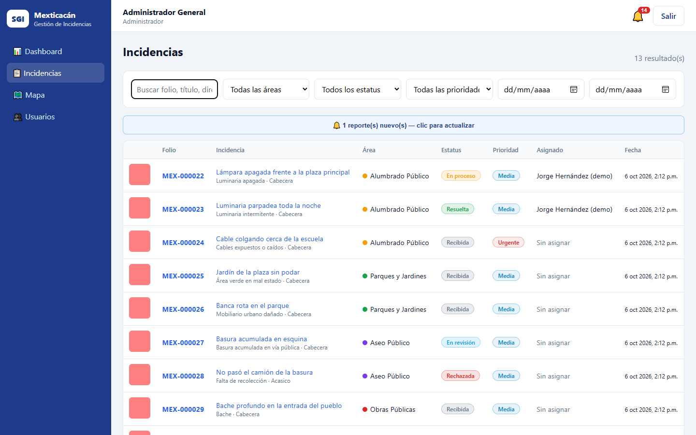
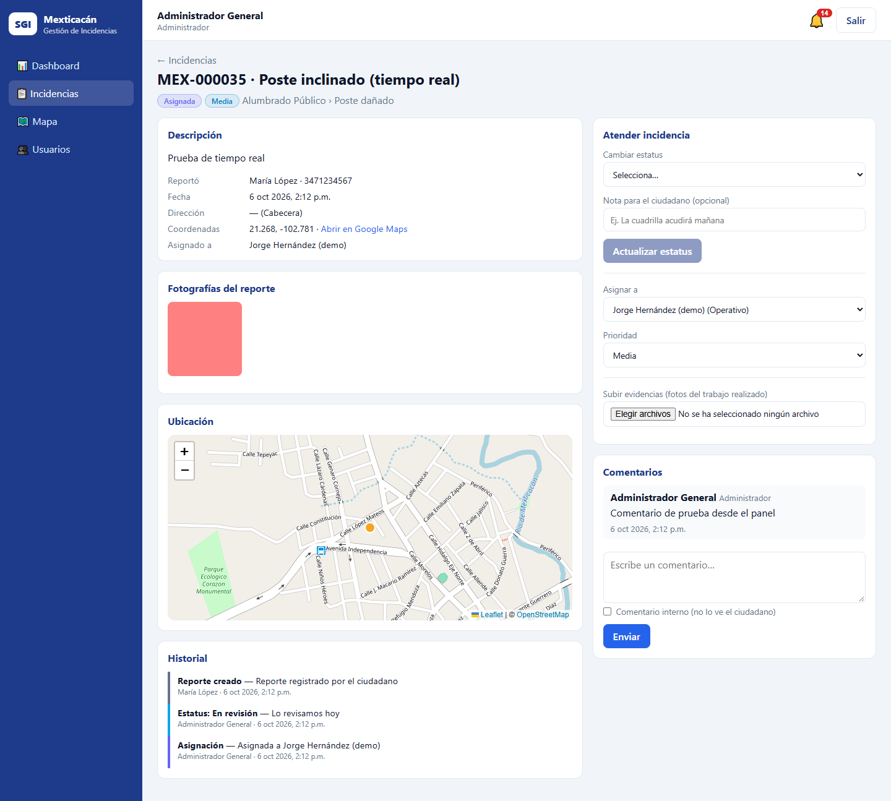
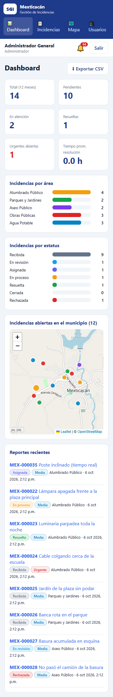
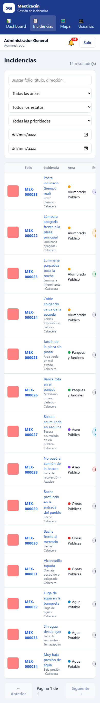

Guía ilustrada para ciudadanía y personal municipal
H. Ayuntamiento de Mexticacán, Jalisco
Edición · 15 de octubre de 2026
Propósito Aprender las funciones disponibles en SGI según el perfil de acceso, registrar reportes con información útil y dar seguimiento a su atención.
Las capturas corresponden a pantallas de prueba del panel web. Los datos visibles son demostrativos; no se incluyen credenciales de acceso.
SGI Mexticacán · Manual por perfil15 octubre 2026
Antes de comenzar
Perfiles y acceso
SGI aplica permisos de acuerdo con el rol y, cuando corresponde, con el área o la asignación de cada usuario. La ciudadanía usa la aplicación móvil; el personal municipal trabaja en el panel web.
Perfil
Acceso y funciones principales
Ciudadano
Desde móvil, crea reportes y consulta únicamente sus propios folios, avances y comentarios.
Administrador
Consulta y gestiona reportes de todas las áreas. Administra cuentas, roles, áreas y estados de acceso.
Recepcionista
Consulta reportes de todas las áreas; puede asignar personal, ajustar prioridad y dar seguimiento.
Encargado de Área
Consulta y coordina los reportes de su área; puede asignar personal disponible de esa área.
Operativo
Consulta reportes asignados a su cuenta; registra avances, evidencias y comentarios.
Protege tu cuenta. No compartas contraseña ni sesión. Si una función no aparece o se rechaza, confirma con el administrador tu rol, área y asignación; no intentes evadir permisos.
Flujo general de una incidencia
La ciudadanía registra el problema; el municipio lo revisa y asigna; el personal informa el avance y la resolución; quien reportó consulta el historial y puede añadir comentarios.
Panel web: resumen general. Las cifras y folios de esta captura son datos demostrativos de una prueba.
SGI Mexticacán · Manual por perfilPerfiles
Perfil 1 · Ciudadano
Reporta y consulta desde el celular
La aplicación permite reportar problemas de Alumbrado Público, Parques y Jardines, Aseo Público, Obras Públicas y Agua Potable. Regístrate con tu correo y conserva tu contraseña en privado.
Crear una cuenta
Abre la aplicación oficial o Expo Go cuando el Ayuntamiento te proporcione un QR de pruebas.
Pulsa Regístrate. Nombre, correo y contraseña son obligatorios; la contraseña debe tener al menos 8 caracteres. Confírmala.
Si ya tienes cuenta, inicia sesión con el correo registrado. En un teléfono compartido, pulsa Salir al terminar.
Enviar un reporte
1 · SeleccionaEn Mis reportes, pulsa ＋ Reportar. Elige el área y la categoría que describan el problema.
2 · DescribeEscribe un título breve y explica qué sucede, desde cuándo y qué referencia ayuda a ubicarlo.
3 · DocumentaAdjunta entre 1 y 5 fotografías desde cámara o galería. Evita datos personales que no sean necesarios.
4 · UbicaPermite el GPS, revisa el marcador en el mapa y ajústalo tocando el punto correcto. Completa dirección o comunidad si hace falta.
5 · EnvíaRevisa los datos y pulsa Enviar reporte. Guarda el folio de confirmación.
6 · Da seguimientoEn Mis reportes, abre el folio para revisar estatus, historial y comentarios. Desliza hacia abajo para actualizar.
Capturas de la app ciudadana. En el material disponible para esta edición no hay capturas del flujo móvil de ciudadanía. No se presentan imágenes del panel municipal como si fueran pantallas de la app ciudadana.
Estatus que puedes consultar
Recibida → En revisión → Asignada → En proceso → Resuelta → Cerrada. También puede aparecer Rechazada; revisa los comentarios para conocer la información registrada.
Si el envío parece fallar, revisa primero Mis reportes para confirmar que no se haya generado un folio. Así evitas crear duplicados.
SGI Mexticacán · Manual por perfilCiudadanía
Perfiles 2 y 3 · Administrador y Recepcionista
Revisar la bandeja de incidencias
Inicia sesión en el panel web con la cuenta institucional. El Dashboard resume la operación; abre Incidencias para localizar y revisar reportes.
Lista de incidencias con búsqueda, filtros y paginación. El aviso de reportes nuevos permite actualizar la lista.
Pasos para localizar un reporte
Busca por folio, título, dirección o comunidad.
Filtra por área, estatus, prioridad o fechas según lo que necesites revisar.
Pulsa el folio o título para abrir el detalle; confirma descripción, fotos y ubicación antes de tomar una acción.
Si aparece el aviso de reporte nuevo, púlsalo para recargar los resultados.

Aviso de nuevo reporte recibido en el panel. La conexión debe estar activa para recibir actualizaciones en tiempo real.
Alcance: Administrador y Recepcionista pueden consultar todas las áreas. La administración de usuarios está reservada al Administrador.
SGI Mexticacán · Manual por perfilAdministrador · Recepcionista
Perfil 2 · Administrador
Administrar cuentas con cuidado
La opción Usuarios aparece en el menú únicamente para Administrador. Utilízala para crear cuentas municipales y mantener sus permisos y estado.
Formulario de alta. Se recomienda asignar solo el rol y área necesarios para las funciones del puesto.
Crear una cuenta de personal
Abre Usuarios y pulsa + Nuevo usuario.
Captura nombre y correo institucional; agrega apellidos y teléfono cuando corresponda.
Selecciona el rol. Para Encargado de Área y Operativo, selecciona el área correspondiente.
Establece una contraseña inicial de al menos 8 caracteres y entrégala al titular mediante un canal seguro.
Pulsa Guardar y comprueba rol, área y estado en la lista.
Modificar o desactivar
Busca por nombre o correo y pulsa Editar. El correo no se puede cambiar desde el formulario.
Deja la contraseña vacía si no necesitas cambiarla. La contraseña nueva es opcional al editar.
Desmarca Cuenta activa para deshabilitar el acceso cuando ya no se necesite. No desactives tu propia cuenta.
Revisa periódicamente las cuentas activas, roles y áreas. No compartas cuentas ni guardes contraseñas en este manual.
Buenas prácticas: utiliza cuentas personales, aplica el principio de menor privilegio y confirma cuidadosamente el correo antes de guardar.
SGI Mexticacán · Manual por perfilAdministrador
Perfiles 2, 3 y 4 · Gestión municipal
Asignar y dar seguimiento
Administrador, Recepcionista y Encargado de Área pueden asignar personal y cambiar prioridad. El Encargado opera sobre su área. La disponibilidad exacta de acciones depende del rol y los permisos del reporte.

Recorte del panel de atención: estatus, nota, asignación, prioridad y carga de evidencias. Se omite la columna con datos personales de la captura.
Atender un caso
Abre el detalle desde la lista y valida el área, categoría, descripción, fotografías y punto del mapa.
Selecciona el nuevo estatus de acuerdo con la situación real y agrega una nota breve para la ciudadanía si es útil.
Para asignar, elige una persona disponible del área. Selecciona una prioridad acorde con la urgencia operativa.
Cuando haya evidencia del trabajo realizado, usa Subir evidencias. Se admiten hasta 5 imágenes por envío.
Escribe en Comentarios. Marca Comentario interno solo si la ciudadanía no debe ver el mensaje.
Verifica el historial y vuelve a cargar el detalle si el cambio no se refleja de inmediato.
Privacidad: mantén los comentarios objetivos. Usa mensajes internos para coordinación interna; nunca registres contraseñas ni información personal innecesaria.
SGI Mexticacán · Manual por perfilAdministrador · Recepción · Encargado
Perfil 4 · Encargado de Área
Coordinar los reportes del área
La cuenta de Encargado está limitada al área que le asignó el Administrador. Desde la lista revisa el trabajo pendiente y coordina la asignación con operativos del mismo ámbito.
El mapa permite ubicar incidencias por área. Los puntos y folios mostrados corresponden a datos de demostración.
Rutina recomendada
Revisa incidencias nuevas y casos abiertos del área.
Comprueba ubicación, categoría y prioridad; solicita aclaración en un comentario cuando falte información útil.
Asigna el reporte a un operativo disponible del área y comunica el avance con una nota clara.
Confirma que el personal registre evidencias y marque el estatus real del trabajo.
Revisa el mapa, el historial y la lista para detectar casos sin asignar o con seguimiento detenido.
Si no aparecen reportes: limpia los filtros y confirma con el Administrador que el área asignada a tu usuario sea correcta.
SGI Mexticacán · Manual por perfilEncargado de Área
Perfil 5 · Operativo
Atender los reportes asignados
El Operativo ve únicamente las incidencias asignadas a su cuenta. El panel web es el medio de trabajo municipal. Si una asignación no aparece, solicita al Encargado o Administrador que revise la cuenta y el área.
La captura de atención es de un usuario administrador. Se utiliza únicamente para ilustrar el detalle de un reporte. Un Operativo no verá las opciones de administración, asignación o prioridad que no le correspondan.
Ejemplo del panel de atención. El Operativo puede actualizar el estatus solo a En proceso o Resuelta, agregar evidencias y comentar.
Registrar el trabajo de campo
Abre el reporte que se te asignó. Lee descripción y comentarios antes de acudir.
Usa la ubicación y la dirección como referencia. Confirma en el lugar que se trata del problema descrito.
Selecciona En proceso al iniciar la atención.
Al terminar, adjunta evidencia fotográfica pertinente y registra una nota clara sobre el trabajo realizado.
Marca Resuelta cuando la atención corresponda a ese estado. Si sigue pendiente, deja el estatus correcto y explica el siguiente paso.
Revisa el historial y los comentarios para confirmar que la información quedó guardada.
Importante: no marques un caso como resuelto antes de completar el trabajo. No publiques información confidencial en comentarios visibles para ciudadanía.
SGI Mexticacán · Manual por perfilOperativo
Acceso adaptable · Personal municipal
Panel en pantalla de celular
El panel web también puede mostrarse en una pantalla estrecha. Esta vista corresponde al panel municipal adaptable, no a la app móvil de ciudadanía. Para crear un reporte ciudadano se utiliza la aplicación ciudadana.

Dashboard del panel municipal en formato celular: indicadores, áreas, estatus, mapa y reportes recientes.

Lista de incidencias del panel municipal en pantalla estrecha. Puede requerir desplazamiento para consultar todas las columnas.
Atención: no dejes abierta una sesión municipal en un teléfono compartido. Al terminar, pulsa Salir y bloquea el dispositivo.
Ayuda y reporte de problemas
Al pedir soporte, informa fecha y hora, perfil, pantalla, pasos para reproducir el problema, dispositivo/navegador y texto del error. Para incidencias, incluye el folio. No compartas contraseñas, tokens ni archivos `.env`.
Las capturas son ilustrativas y pueden no coincidir exactamente con la versión instalada. Los permisos se aplican según el perfil configurado en el servidor.